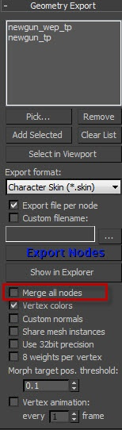
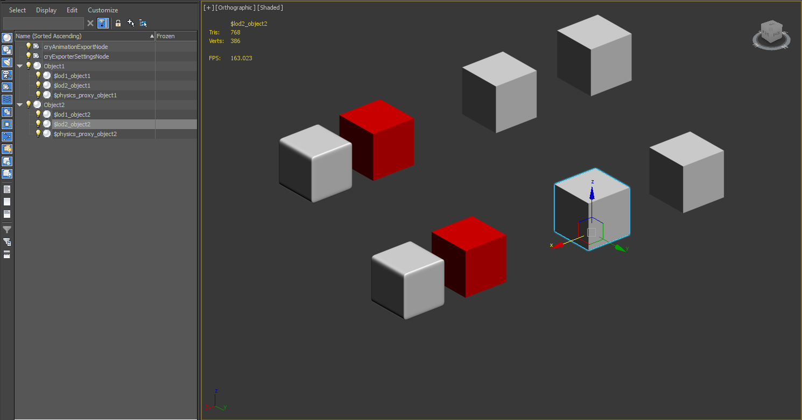
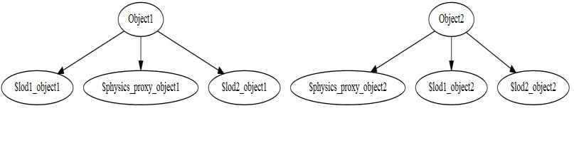
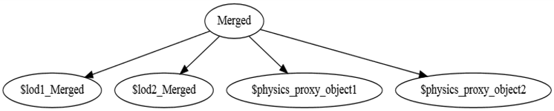

Overview
The Merge all nodes option in the Geometry Export panel of 3ds Max compiles all the geometry from the different nodes into a single node. It's only supported for non-skinned geometry (static geometry).
When this option is enabled, the Resource Compiler combines the meshes of multiple nodes in your scene to a single node in the CGF file.
However, the CGF file may still contain more than one node, but each of them can contain one or more former nodes of your DCC scene.
Pic1: Geometry Export window in 3ds Max. 
Process for merging all nodes
The Merge all nodes option is essentially a rendering optimization as it reduces the number of draw calls. The pivot changes, as described below, are a consequence of the merging process. However, the Merge all nodes option is not intended as a way to change pivots of a mesh.
The Resource Compiler creates a single merged mesh for all nodes on the same level of detail. In particular, the merged CGF file contains one single node that combines all the LOD0 meshes in your scene. Similarly, there will also be a node for LOD1, LOD2, etc...
In the CGF file, the node that combines all LOD0 meshes is the parent node of all other nodes (including LOD nodes and other helper nodes). When the Resource Compiler merges two meshes, it transforms the vertices of both meshes into world space. Even though the vertices of physics proxies are transformed, their nodes are not merged.
Example:
Consider the following scene in 3ds Max:
Pic2: An example of LOD meshes in 3ds Max. 
As you can see in the above image, the outliner window is on the left hand side. This scene contains two objects Object1 and Object2, and each object has its own LOD meshes and physics proxy.
When the file is exported with Merge all nodes option disabled, the CGF file essentially has the same hierarchy as the 3ds Max scene:
Pic3: Hierarchy of the objects when Merge all Nodes disabled. 
When the option Merge all nodes is enabled, the following CGF hierarchy is produced:
Pic4: Hierarchy of the objects with Merge all Nodes enabled.
